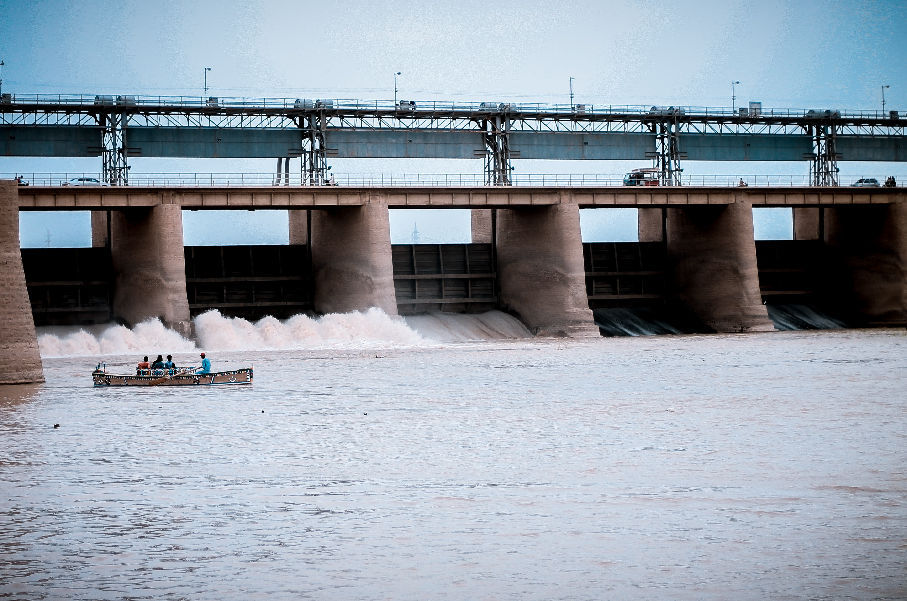

Overview
You don't have to be a scientist to believe in climate change or to even feel it's intensifying effects. However, there is hope that we will be able to continue living on earth. That hope manifests its self in a form of energy. Something we've been living with for all of mankind. What's that form of energy? Our final saving grace? It's renewable energy.
Renewable energy is a form of energy that may give us a chance to continue living on earth for the next few years. So what exactly is renewable energy? Simply, renewable energy is energy that is harvested from renewable resources that are restored on a human timescale.
Examples of these forms of energy are solar, wind, hydropower, and geothermal. During the 1800s wood was utilized vastly across the United States for cooking, heating, and lighting. From that time until now fossil fuels such as natural gas, coal, and petroleum were used as a major source of energy. As these forms of energy were being utilized their sources were continually being depleted. In the 1990s levels of consumption of renewable resources have increased and it can be seen that the use of renewable resources will continually increase over the years.
If we all do our equal part in this race towards a cleaner future we will see an impact in emissions on a global scale. Several countries have employed plans towards working to use sustainable clean resources and renewable energies in their countries. However, there is still a lot of work to do. But with the use of new innovative technologies and new ways to harvest earth's renewable resources we will be able to get closer to reaching our goal of lowering global emissions and getting closer to improved global sustainability. There is only one remaining question. Will you do your part?
">
Fishermen on a river in front of a dam.